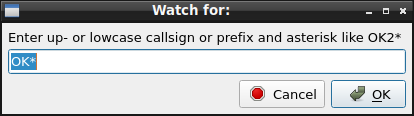
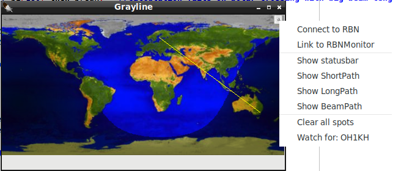
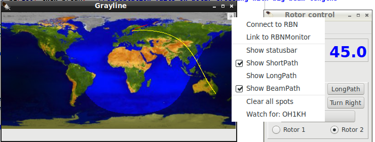
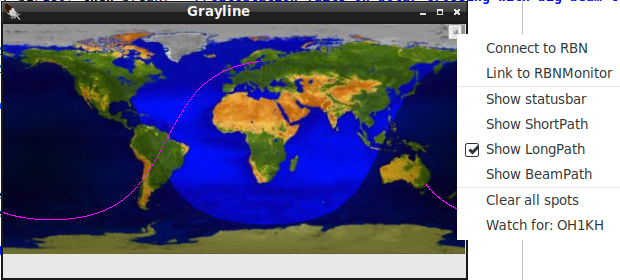
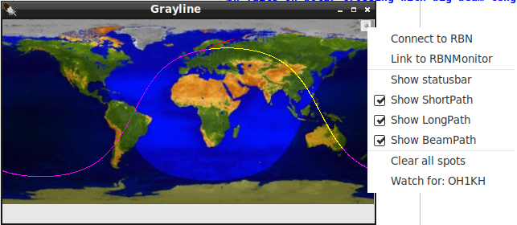

|
WARNING!
Backup your data often! BACKUP your log directory at the end of EVERY session!
All that you need to backup and store in a safe place is the log database directory
located in the ~/.config/cqrlog/database folder, or you can enable the autobackup function
in Preferences. This autobackup function creates an ADIF file with a backup of your log.
/td>
|
CQRLOG for LINUX by OK2CQR & OK1RR

Grayline map
Grayline window opens from NewQSO/Window/Grayline.
Grayline map has speed button at top right corner that opens a popup menu containing:
- Connect to RBN If autoconnect is not seleceted, see: RBN support, the connect and disconnect to RBN can be done here.
- Link to RBNMonitor This is alternative to RBN connection and will use same connection as RBN monitor window has (if connected).
- Show statusbar Shows connection or linking state
- Show ShortPath By default Grayline map will show straight line from your station (from your locator defined) to station you enter to NewQSO/callsign.
With this selection you can switch the straight line to plotted great circle short path.
- Show LongPath As another option you can select great circle longpath. This can be selected with, or without short path.
- Show BeamPath If you use ROT control you can select to show Beam path heading.
- Clear all spots Clears all RBN spots from map.
Note: Dots also depend on the band, if you change band, dots will always be deleted. All data is band related.
- Watch for Opens an edit window where you can change callsign or prefix watched without opening preferences. see: RBN support




